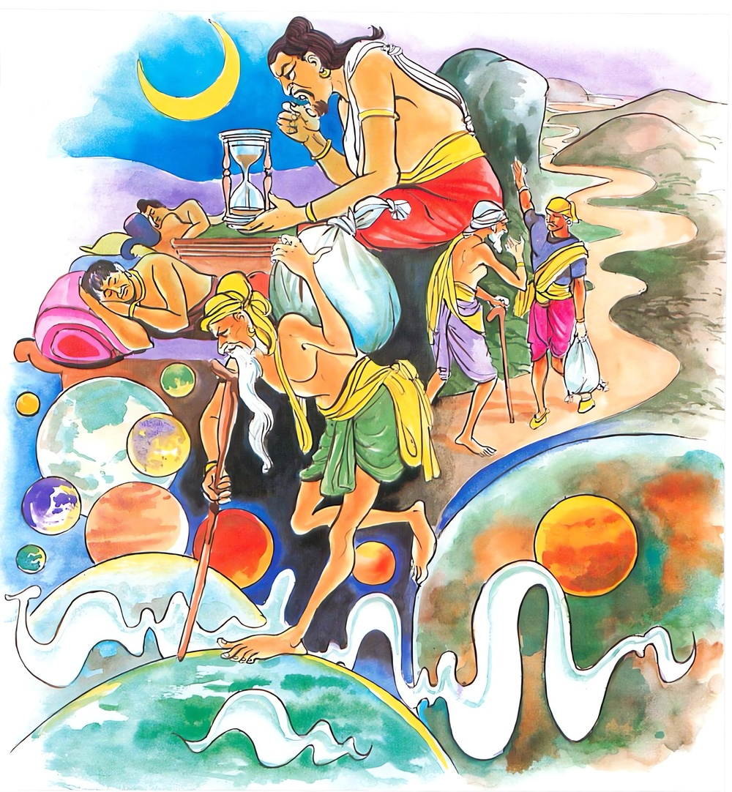

5-1 පළමුවන කුමුදු උපුල් ගෙනා දුප්පත් සේවකයාගේ වස්තුවයි.
මෙම කතාව සද්ධර්ම සාගරයෙන් ද කියවන්න.
දීඝා ජාගරතො රත්ති දීඝං සන්තස්ස යොජනං
දීඝො බාලානං සංසාරො සද්ධම්මං අවිජානතං.
නොනිදන්නාට රැය දික් ය. ගමන් විඩා ඇත්තාට යොදුන දික් ය. සදහම් නොදත් අනුවණයනට සසර දික් ය.

දීඝා ජාගරතො රත්ති ආදි මේ ධර්මදේශනාව බුදුරදුන් දෙව්රම වාසයකරන කාලයෙහි පසේනදි කොසොල් රජුද, තවත් පුරුෂයෙකුද අරභයා දේශනා කරනලදි.
සැණකෙළිදිනක පසේනදි කොසොල් රජු, අබරණින් සැරසූ මුළුමනින්ම සුදුපාටවූ පුණ්ඩරීක නම් ඇතා පිට නැගී මහත්වූ රාජානුභාවයෙන් නගරය ප්රදක්ෂිණා කරයි. මාර්ග අවහිරකම් ඉවත්කිරීම සඳහා කැට දඬුමුගුරුවලින් තළා පලවා හරින මහාජනයා එසේ පැන යද්දීත් බෙල්ල හරවා රජුන් දෙස බලති. මෙසේ ඒ රජුන් යහපත් ලෙස දන්දීම, සිල්රැකීම, යහපත් කාර්යයන්කිරීම ආදියේ ඵල භුක්තිවින්දේය. මෙසේ රජු යන අතර එක්තරා දුප්පත් එකෙකුගේ බිරිඳක් සත්බුමුපහයක ඉහළම මාලයේ සිට එක් වාකවුලුවක් හැර රජු දෙස බලා වහාම ඉවත්වූවාය. රජු එය දුටුවේ පිරුණුසඳ වළාගැබක සැඟවී ගියාක් මෙනි. රජු ඒදෙස බලා ඈ කෙරෙහි බැඳුණු සිතින් ඇතු පිටින්වැටෙන්නාක් මෙන්වී වහා නගර ප්රදක්ෂිණාවකොට ඇතුළු පුරයට ගොස් එක් විශ්වාස ඇමතියෙකු අමතා, අසවල් තැන මා බලාසිටි ප්රාසාදය දුටුවෙහිද? එසේය දේවයන්වහන්ස. එහි සිටි එක් ස්ත්රියක් දුටුවෙහිද? දැක්කෙමි දේවයන්වහන්ස, ඔබ එහි යන්න. ගොස් ඈ ස්වාමියෙකු ඇත්තියකද නැද්දැයි දැනගෙන එවයි කීවේය.
ඔහු එහි ගොස් ඈ සස්වාමික බව දැන අවුත් ඈ සැමියෙකු ඇත්තියකියි රජුන්ට දන්වා සිටියේය. ඉන්පසු රජු එසේනම් ඇගේ සැමියා මෙහි කැඳවන්නැයි කීකල්හි ඇමතියා ඒ පුරුෂයා වෙත ගොස් පින්වත, රජු ඔබ කැඳවන්නෙහියයි දැන්වීය. හෙතෙම මේ මගේ භාර්යාව නිසා හටගත් බියජනක දෙයක් වියයුතුයි සිතා රජඅණ ප්රතික්ෂේප කළ නොහැකිව ගොස් රජුන් වැඳ සිටියේය. ඉන්පසු රජු ඔබ මාළඟ සේවය කරවයි කීවේය. දේවයන්වහන්ස, මට සේවය අවශ්ය නැත. මම මගේ පුරුදු වැඩ කර ඔබවහන්සේට අයබදු ගෙවන්නෙමි. එයම මගේ ජීවිකාව වීම මැනවයි කීය. තාගේ අයබද්දෙන් මට වැඩක් නැත, අද පටන් මාළඟ සේවය කරවයි කියා පලිහක් සහ ආවුධද දුන්නේය. එසේ කරන ලද්දේ ඔහු වෙත කිසියම් වරදක් පටවා මරාදමා ඔහුගේ භාර්යාව තමන් සතුකර ගන්නෙමි යන අදහසිනි. ඉන්පසු ඒ පුරුෂයා මරණබියෙන් බියපත්ව අප්රමාදව රජුට සේවය කෙළේය. රජුන්ට ඔහුගේ වරදක් දැකගත නොහැකිවුවත් රජුතුළ කාමදැවිල්ල වැඩීගිය හෙයින් මොහුට යම් දොසක් ආරෝපණය කොට රජ අණින් මරා දමමියි සිතා ඔහු තමා ළඟට කැඳවා එම්බල මෙහි සිට යොදුන් සියයක් ගිය ගැන නදියක් ඇත. එතැන් සිට අසවල් තැනට ගොස් සවස මා නාන වේලාවට කුමුදු හා උපුල් මල්ද රන්වන් මැටිද රැගෙන එව. ඉතින් ඒ වේලාවට නාවොත් තා මරාදමන ලෙස අණකරමියි කීවේය.
ඒ සේවකයා, දාසයන් සිව්දෙනා අතර කීකරු ලෙස ක්රියාකරන්නෙකි. මිලයට ගත් දාසාදීහු මගේ හිස රුදා දෙයි, මගේ පිට රිදෙයි කියා සේවයට නොඅවුත් සිටින්ට හැකිය. ඔහුට එසේනොවීය. එහෙයින් මා අවශ්යයෙන්ම යායුතුය. කුමුදු උපුල් හා අරුණුවන් මැටි නම් නාගලෝකයෙහි උපදියි. මම ඒවා කොහෙන් ලබන්නෙම්දැයි සිතමින් මරණබියෙන් බියපත්ව, ගෙදර ගොස් සොඳුර මට බත් සූදානම්දැයි ඇසීය. ස්වාමීනි, බත් තවමත් ලිප උඩය. හෙතෙම බත් ළිපෙන් බානතුරු සිටිය නොහැකිව සැන්දෙන් කැඳ ඉවත් කොට ලැබුණු ව්යංජනත් සමග තෙතබරි බත් මල්ලක දමා රැගෙන යොදුනක් මග ගෙවා ගියෙය්. ඔහු යනඅතර බතද ඉදීගියේය. ඔහු ඉඳුල් කිරීමට පෙර බත්ටිකක් වෙන්කරගෙන කනඅතර එක් මගියෙක් දැක මා ඉඳුල් නොකර වෙන්කර තැබූ බත් ඇත. එය රැගෙන අනුභව කරන්නැයි කීවේය. මගියා එය රැගෙන කෑවේය. අනිත් තැනැත්තා බත් කා එක් බත් මිටක් ජලයෙහි දමා කට සෝදාගෙන, මහත් හඬින් මේ නදී ප්රදේශයෙහි අධිගෘහිත නාග සුපර්ණ දේවතාවෝ මගේ වචනය අසත්වා, රජු මට දඬුවම් දෙනු පිණිස කුමුදු උපුල් මල් හා අරණුවන් මැටි ගෙනඑවයි නියෝග කෙළේය. මගියෙකුටත් මම බත් දුනිමි. එය දහසක් ආනිසංසය. ජලයෙහි මාලුන්ටත් බත්දුනිමි. එය සීයක් ආනිසංසය. මෙතෙක් මා ලැබූ පින් තොපට පවරා දෙමි. මට කුමුදුඋපුල් මල් සමග අරුණුවන් මැටි ගෙනවුත් දෙන්නැයි තුන්වරක් ඉල්ලා සිටියේය. එහි අධිගෘහිත නාරජ තෙමේ ඒ ශබ්දය අසා මහලු වෙසක්ගෙන ඔහු ළඟට ගොස් කුමක් කියන්නෙහිදැයි ඇසීය. හෙතෙම නැවත නැවතත් එයම කියා මට ඒ පින් දෙවයි කීකල දෙන්නෙමියි කීවේය. මෙසේ ඔහු දෙතුන්වරක් පින් ලබාගෙන කුමුදු උපුල්මල් සමග අරුණුවන් මැටි ගෙනවුත් දුන්නේය.
රජු මෙසේ සිතීය. මිනිස්සු නම් බොහෝ උපාය දන්නෝය. ඉදින් ඔහු කුමක් හෝ උපායකින් මේ දේවල් ලබා ගතහොත් මගේ බලාපොරොත්තු කඩවී යන්නේය. මෙසේ සිතා කල්තියාම දොරවල් වස්වා යතුරු තමා ළඟට ගෙන්වා ගත්තේය. අනිත් තැනැත්තාත් රජු නහන වේලාවටම එහි ගොස් යාමට දොරක් නොලබා දොරටුපාලයා කැඳවා දොර හරුවයි කීය. දොර හැරිය නොහැකියි. රජු කල්තියාම දොරවල් වස්වා යතුරු රජගෙදරට ගෙන්වා ගත්තේයයි කීය. හෙතෙම, මේ රාජදූතයෝ දොරහරිව්යයි මා කීවත් නොහරිති. දැන් ඉතින් මට ජීවත් වීමක්නම් නොලැබේ. කුමක් කරන්නෙම්දැයි සිතා දොරේ උළුවස්සෙහි මැටිපිඬ තබා එහි මල් ගසා මහත්හඬ නගා කෑගසන්නේ පින්වත් නගරවාසීනි, මා රජඅණ ඉටු කළබව දැනගනිව්, රජු මා නිකරුණේ නසා දැමීමට කැමතිවෙයි යනුවෙන් තෙවරක් කෑගසා කොහි යන්නෙම්දැයි සිතන්නේ භික්ෂූහුනම් මොළොක් හදවත් ඇත්තෝය. විහාරයට ගොස් නිදාගනිමියි නිගමනය කෙළේය. මේ මිනිස්සු සුඛිත මුදිත කාලවල භික්ෂූන් සිටින බවවත් නොදැන දුකට පත්වූවිට පන්සල්වලට යනු කැමැත්තාහු වෙති. එනිසා ඔහුද මට වෙනත් පිහිටක් නැතැයි පන්සලට ගොස් එක් තැනක නිදාගත්තේය.
ඒ ස්ත්රිය ගැනම සිතමින් රෑ නිදි නොලබන රජුගේ කාමගින්න තවතවත් වැඩිවීගියේය. හෙතෙම, එලිය වැටුණු වහාම ඒ මිනිසා මරවා ඒ ස්ත්රිය ගෙන්වා ගනිමියි සිතුවේය. එම රාත්රියෙහිම ලෝකුඹුනරකයෙහි සැටයොදුන් පමණවූ ලෝහ කුම්භයක (සැළියක) උපන් මිනිසුන් සතර දෙනෙක් පැසෙන සහල් මෙන් පෙරළිපෙරළී පැසෙන අතර අවුරුදු තිස්දහසක් පැසිපැසී සැළිය යටට බැස තවත් අවුරුදු තිස්දහසක් සැළියේ උඩ මුවවිටට පැමිණියාහුය. ඔවුහු හිස් ඔසවා ඔවුනොවුන් දෙස බලා එක එක ගාථාව කියන්ට කැමතිවුවත් එය සම්පූර්ණයෙන් කියාගත නොහැකිව එක එක අකුරු බැගින් කියා නැවතත් සැළිය ඇතුළට බැස ගිළී ගියාහුය.
නිදි නොලබා සිටි රජු මධ්යම රාත්රියෙහි ඒ ශබ්දය අසා බියෙන් තැති ගැනී මේ කිමෙක්ද, මගේ ජීවිත විනාශයකවත් වන්නේද, නැතහොත් අගමෙහෙසියට අනතුරක්ද, නැතහොත් මගේ රාජ්යය විනාශවන්නේදැයි සිතමින් මුළු රෑතිස්සේ ඇස පියාගත නොහැකිවිය. හෙතෙම උදෑසන පුරෝහිතයන් කැඳවා ආචාර්යතුමනි, ඊයේ මධ්යම රාත්රියෙහි මහාභයානක ශබ්දකීපයක් මට ඇසිණි. රජයට හෝ මෙහෙසියට හෝ මට හෝ කිසියම් අනතුරක්වන්නේදැයි නොදනිමි. ඔබ මෙහි කැඳවනලද්දේ ඒ නිසායයි දන්වා සිටියේය.
මහරජතුමනි, ඔබට ඇසුණු ඒ ශබ්ද මොනවාද? ආචාර්යයෙනි, දු. ස. න. සො. යන මේ ශබ්ද ඇසිණි. මේ ශබ්දවල තේරුම් මොනවාදැයි පැහැදිලි කරන්න. බමුණාට එය මහඅඳුරකට පිවිසියාක් මෙන් කිසිවක් නොවැටහිණ. නොදන්නෙමියි කිවහොත් ලාභසත්කාරයෙන් පිරිහෙතියි බියවී මහරජතුමනි, මේ නම් මහා භයානක දෙයකියි කීවේය. ආචාර්යයෙනි ඒ කිමෙක්ද? ඔබේ ජීවිතයට අනතුරක් පෙනේයයි කීය. බියගත් රජු ආචාර්යයෙනි, මීට කිසියම් පිළියමක් ඇද්දැයි විමසීය. මහරජ බිය නොවන්න. මීට පිළියමක් ඇත. මම ත්රිවේදයම දනිමියි කීය. ඒ සඳහා කුමක් අවශ්යදැයි රජු ඇසීය. සර්වශත (සියල්ලෙන් සීයබැගින්) යාගයකොට ජීවිතය ලැබියහැකියයි බමුණා කීවේය. ඒ සඳහා කුමක් අවශ්යද? ඇතුන් සීයක්, අසුන් සීයක්, වෘෂභයන් සීයක්, දෙනුන් සීයක්, එළුවන් සීයක්, බැටලුවන් සීයක්, කුකුළන් සීයක්, ඌරන් සීයක්, ළමයින් සීයක්, දැරියන් සීයක් ආදී වශයෙන් එක් එක් සතුන්ගෙන් සීය බැගින්කොට මෘගජාතීන්ගෙන්ම ගන්නාවිට තමන්ගේ කෑම පිණිස ගත්තේයයි කියහැකියයි සිතා, ඇත් අසු මිනිසුන්ද ගැන්වීය.
රජු තමන්ගේ ජීවිතයම තමන්ට වටින්නේයයි සිතා සියලු ප්රාණීන් වහාගෙන එව්යයි කීවේය. අණ කළ මිනිස්සු ඊටත් වඩා ප්රමාණවලින් රැස් කළහ. කෝසල සංයුත්තයෙහි මෙය මෙසෙ කියා ඇත. එකල පසේනදි කෝසල රජු මහායාගයක් පටන්ගත්තේය. පන්සීයක් වෘෂභයන්ද, බැටලුවන් පන්සීයක්ද, බැටලුදෙනුන් පන්සීයක්ද, එළුවන් පන්සීයක්ද,.................. ගෙනවුත් යාගය පිණිස කණුවල බැඳ දමන ලදි. ඔහුගේ දාසයෝද,.......... කම්කරුවෝද ඔවුහු දඬුවම් බියෙන් තැතිගෙන කඳුළු පිරි දෑසින් යුතුව හඬමින් වැඩකටයුතු කරත්. මහාජනයා තමතමන්ගේ නැතිවී ගිය දූපුතුන් නෑයන් ගැන හඬමින් විලාප කියමින් මහත්සේ ශබ්දකළහ. පොළොව කම්පාවන්නාක් මෙන් විය.
මල්ලිකා දේවිය රජුන් ළඟට ගොස්, මහරජතුමනි, ඔබේ ඉන්ද්රියයන් විකෘති වී ක්ලාන්ත වූ ගතියක් පෙන්නුම් කරන්නේ ඇයිදැයි ඇසුවාය. මල්ලිකා ඔබ මොනවද කියන්නෙ? ඔබ මගේ කන ළඟින යන සර්පයා පවා නොදකින්නෙහිය. දේවයන්වහන්ස සිදුවී ඇත්තේ කුමක්ද? රාත්රිභාගයෙහි මෙබඳු ශබ්දයක් ඇසුවෙමි. ඉන්පසු මම පුරෝහිතයා කැඳවීමි. මගේ ජීවිතයට අනතුරක් ඇතියි හේ කීවේය. සර්වශත යාගය කොට ජීවිතය බේරාගත හැකිබවද හේ කීය. මගේ ජීවිතය මට වටිනේයයි සිතා මේ ප්රාණීන් යාගපූජා සඳහා මෙහි ගෙන්වා ගත්තෙමියි රජු කීවේය. මල්ලිකා, දේවයන්වහන්ස, ඔබ අන්ධබාලයෙකි, එසේ වුවත් ද්රෝණ ගණනින්, බත් මාලුපිණි සූප වර්ග කන්නෙහිය. රටවල් දෙකක රාජ්යයද කරන්නෙහිය. ඔබේ නුවණ නම් බෙහෙවින්ම අල්පයයි කීවාය. ඔබ කුමක් හෙයින් මෙසේ කියන්නීද?
මහරජ එකෙක් මරා තව එකෙක් ජීවිත ලාභය ලැබූ තැනක් මින්පෙර ඔබ දැක තිබේද? මෝඩ බමුණාගේ කථාව අසා කුමක් හෙයින් මහාජනයා පිට දුකක් හෙල්ලෙහිද? ළඟ විහාරයෙහි දෙවියන් සහිත ලෝකයාට අග්රපුද්ගලවූ අතීතාදී සියලු සීමා ඉක්මවා ගිය ඥානශක්තියක් ඇති බුදුරජාණන්වහන්සේ වැඩසිටින සේක. උන්වහන්සේගෙන් අසා අවවාද ලබාගෙන කටයුතු කරවයි කීකල්හි සැහැල්ලු වාහනයකින් මල්ලිකාත් සමග විහාරයට ගොස් මරණබියෙන් තැතිගෙන කිසිවක් කියාගත නොහැකිව බුදුන් වැඳ එක් පැත්තක හිඳගත්තේය. ඉන්පසු භාග්යවතුන්වහන්සේ, මහරජ, මේ මහදවල් කුමක් හෙයින් හදිසියේ මෙන් පැමිණියේ ඇයිදැයි පළමුවෙන්ම කථාව පටන්ගත් සේක. රජු නිහඬවම සිටියේය.
ඉන්පසු මල්ලිකා කථා කරමින්, ස්වාමීනි, රජු මධ්යම යාමයේදී ශබ්දයක් අසා ඇත. ඉන්පසු ඔහු පුරෝහිතයාට ඒ බව දැන්වීය. පුරෝහිතයා, මහරජ ඔබට ජීවිතන්තරායක් සිදුවෙයි. ඒ උවදුරින් වැළකීමට නම් සියලු ප්රාණීන්ගෙන් සියය බැගින් ගෙන ඔවුන්ගේ බෙලි කපා එයින් ගන්නා ලේවලින් යාගය කළ කල්හි ජීවිතය ලබාගත හැකියයි කියා ඇත. රජු ප්රාණීන් ගෙන්වා ගත්තේය. ඒ නිසා මම මොහු ගෙන ආවෙමියයි කීවාය. මහරජ එය ඇත්තද? ස්වාමීනි, එසේය. ඔබට ඇසුණේ කිනම් ශබ්දද? හෙතෙම තමන් ඇසූ ආකාරයටම කීවේය. බුදුරදුන්ට ඒ ඇසෙත්ම එකවරම තේරුම් ගියේය. ඉන්පසු බුදුරජාණන්වහන්සේ, මහරජ බිය නොවන්න. ඔබට අනතුරක් නැත. පව්කළ සත්ත්වයෝ තමන්ගේ දුක ප්රකට කරමින් මෙසේ කීවාහුයයි වදාළහ. ස්වාමීනි, ඔවුන් විසින් කරන ලද පව්කම කුමක්ද? ඉන්පසු භාග්යවතුන්වහන්සේ ඔවුන් කළකම් පවසන්නෙමි. එසේනම් මහරජ අසාගන්නැයි අතීතය ගෙනහැර පෑහ.
අතීතයෙහි විසිදහසක් ආයු ඇති මිනිස්සු විසූ සමයෙහි කාශ්යප නම් භාග්යවතුන්වහන්සේ ලොව පහළවී විසිදහසක් රහතන් පිරිවරා චාරිකාවේ හැසිරෙමින් බරණැසට වැඩමවූහ. බරණැස වැසි දෙතුන්දෙනාත්, ඊට වැඩිපුර මිනිස්සුත් එකතුව ආගන්තුකදාන දුන්හ. එකල බරණැස සතළිස් කෝටිය බැගින් ධනය ඇති යහළුවූ සිටුවරු සතරදෙනෙක් සිටියහ. දිනක් ඔවුහු මෙසේ සාකච්ඡා කළහ. ‘අපේ ගෙවල්වල බොහෝ ධනය ඇත. අපි එයින් කුමක් කරමුද? මෙබඳු බුදුවරයෙකු පිඬුසිඟා වඩිද්දීත්, දානයක් දෙමු, පිනක් කරමු, සීලයක් රකිමුයයි’ ඔවුන්ගෙන් කිසිවෙක් නොකීහ. එකෙක් මෙසේ කීවේය. සැර සුරා බොමින් මිහිරි මස් කමින් හැසිරෙමු. මෙය අපගේ ජීවිතයෙහි ඵලය වේ. තවත් එකෙක් මෙසේ කීවේය. දිනපතා තෙවරක් පැරණි බත් නානාග්රරස සමග කමින් ඇවිදිමු. සතරවැන්නා මෙසේ කීවේය. යහළුව වෙන කිසිවක් නොකරමු. මිලමුදල් දෙන්නෙමුයයි කීකල නොකැමති ස්ත්රියක් නම් නැත. ඒ නිසා ධනය යොදා පරස්ත්රීසේවනය කරමු. ඉතා හොඳයි ඉතා හොඳයි කියමින් සෙස්සෝ ඔහුගේ කථාවෙහි පිහිටියාහුය.
ඔවුහු ඉන්පසු අභිරූපී ගෑණුන් සොයසොයා මුදල් යමින් වර්ෂ විසිදහසක් පරස්ත්රීසේවනය කොට කළුරිය කිරීමෙන් පසු අවීචිමහා නිරයෙහි උපන්හ. ඔවුහු එක් බුද්ධාන්තරයක් අවීචිනරකයෙහි පැසී එහිදී කළුරිය කොට තවත් පව් ඉතිරිවූ හෙයින් සැට යොදුනක් පමණවූ පැසෙන ලෝහ ඇති ලෝකුඹුනරකයෙහි ඉපදී තිස්දහසක් අවුරුද්දක් එහි යටිතලයෙහි පැසී තවත් අවුරුදු තිස්දහසක් ලෝහකුම්භය මුදුනට පැමිණ එක් එක් ගාථාව කියනු කැමැත්තෙන් එය කියාගත නොහැකිව එහි එක් අකුර බැගින් කියා නැවත පෙරළීගොස් ලෝහකුම්භයටම වැටුණාහ. මහරජන දැන් ඔබ පළමුවෙන්ම ඇසූ ශබ්දය කියන්න. ස්වාමීනි ‘ද’ යන්නයි. බුදුහු ඔවුන් විසින් කියනුලැබූ අසම්පූර්ණ ගාථාව සම්පූර්ණ කර දක්වමින්-
නපුරු දිවි ගෙවමින් ඇතිමුත් දනක් නොදෙමින්
භෝග සම්පත් තිබුණත් සුවතැනක් නොම හදා ගත්තෙමු
ඉන්පසු රජුට මේ ගාථාවේ තේරුම කියාදී මහරජ ඊළඟට ඔබට ඇසුණු දෙවෙනි තුන්වෙනි හා හතරවෙනි ශබ්ද මොනවාදැයි අසා ඒ මෙබඳු ශබ්දයයි කීකල්හි ඒ ගාථාද සම්පූර්ණ කරමින් (ඉතිරි අකුරු තුන ස. න. සො. යනුයි)
සැටදහස් අවුරුදු නිරයේ පැසුණි සැමතින්
මේ පැසෙන නිරයෙන් කවදා මිදෙමුදෝ
කෙළවරක් නෑ මෙහි එය කෙදින දක්නෙම් දෝ
එදා කළ පව්කම් මෙසේ පලදෙයි හිතවත
මම මෙයින් චුතවී මනුලොව මිනිස් බව ලැබ
බණ දැන සිල්වත්ව සිට බොහෝ පින්කම් කරනෙම්
පිළිවෙළින් මේ ගාථා කියා අර්ථයද ප්රකාශකොට මහරජ, මෙසේ ඒ සිව්දෙනා ගාථා කියනු කැමති වුවත් කියා ගත නොහැකිව එක එක අතර බැගින් කියා නැවතත් ලෝකුඹු නරකයටම පිවිසියාහුයයි වදාළසේක. පසේනදි කොසොල් රජුන්ට ඒ ශබ්ද ඇසූදා ඒ නිරිසත්තු නිරයේ යටටම බැස්සාහ. මේ වනවිට වර්ෂ දහසක් ඉක්මී ඇතත් දුක් විඳීම අවසන්වී නොමැත. ඒ දේශනාව ඇසූ රජුට මහත් සංවේගයක් ඇතිවිය.
මේ පරස්ත්රීසේවනය නම් ඉතා බරපතළ වරදකි. එක් බුද්ධාන්තරයක් නිරයෙහි පැසී එයින් චුතව සැටයොදුනක් පමණවූ ලෝහකුම්භයෙහි නැවත ඉපද එහි වර්ෂ හැටදාහක් පැසීගියත් ඔවුන් දුකින් මිදෙන කාලයක් නොපෙනෙයි. මමත් අන්ය ස්ත්රීන් කෙරෙහි ස්නේහකොට මුළු රෑ නිදි නොලැබුවෙමි. දැන් ඉතින් මෙතැන් සිට පරදාරාවන් කෙරෙහි සිත් නොඅලවා සිටිමියි සිතා බුදුරදුන්ට, ස්වාමීනි, අද මට රාත්රිය දීර්ඝ බවක් වැටහිණියයි කීවේය.
ඉහත මල් හා අරුණුවන් මැටි ගෙන ඒමට ගිය පුරුෂයාද මේ වේලාවට එතැනම සිට රජුගේ කතාව අසා මට හොඳ අවස්ථාවක් ලැබුණේයයි බුදුරදුන්ට, ස්වාමීනි, රජතුමාට අද රෑ දිගබව දැනගන්ට ලැබුණේය. මම ඊයේ සවසම යොදුනක දිග බව දැනගත්තෙමියි කියා සිටියේය. ශාස්තෘන්වහන්සේ දෙදෙනාගේම කථා සංසන්දනය කොට, එක් කෙනෙකුට රාත්රිය දීර්ඝ වෙයි. තවත් එකෙකුට යොදුන දික් වෙයි. අන්ධබාලයන්ට සංසාරය දීර්ඝ වේයයි කියා දහම් දෙසමින් මේ ගාථාව වදාළසේක.
නිදි නොලබන අයට රැය බොහෝ දික්ව වැටහේ
පීඩා විඳින දනහට යොදුන බෙහෙවින් දික් වේ
සදහම් නොදත් අයහට සසර බෙහෙවින් දික්වේ
එහි දීඝා යනු, මේ රාත්රිය නම් යාම තුනක් පමණමය. නිදි වළක්වා සිටින්නාට නම් දික්වෙයි. දෙගුණ තෙගුණවී වැටහෙයි. ඒ රාත්රියේ දිගුබව තමන් මකුණු සමූහයාගේ ආහාරයක් වෙමින් හිරු නැග එනතුරුත් පෙරළිපෙරළී නිදන මහාකුසීතයෝත් මිහිරිබොජුන් කා සිරියහන් ගබඩාවේ නිදාගන්නා කාමභොගියෝත් නොදනිත්. මුළු රෑ වීර්යයෙන් භාවනාවේ යෙදෙන යෝගාවචරයාත්, බණකථා කියන ධර්මකථිකයාත්, ධර්මාසනය ළඟ සිට බණ අහන්නාත්, හිසේරුදාහැදුණ පුද්ගලයාත්, අත්පා කැපීම ආදියට භාජනවූ තැනැත්තාත්, වේදනාවෙන් පෙළෙන්නාත්, රාත්රියෙහි පාරට බැස්ස මගියාත් ඒ බව දන්නේය.
යොජනං යනු යොදුනද සිව්ගවු පමණමය. සන්තස්ස යනු ක්ලාන්තවූ තැනැත්තාටයි. ඔහුටද රාත්රිය දීර්ඝවේ. රැය දෙගුණ තෙගුණවූවාක් මෙන් දැනෙයි. මුළු දවස තිස්සේ පාරේ ගමන්කොට ක්ලාන්තවූ තැනැත්තා ඉදිරි මාර්ගයෙන් එන පුද්ගලයෙකු දැක ඉදිරියෙන් ඇති ගම කෙතෙක් දුරින් පිහිටා ඇද්දැයි අසා තවත් ටිකක් ගොස් තවකෙනෙකුගෙනුත් අසා බලයි. ඔහුද යොදුනක්යයි කියයි. ඔහු, ඇසූ සියල්ලෝම යොදුනක්යයි කියති. මෙය දිගයොදුනක් වියයුතුයි. ඒ නිසා එක් යොදුන දෙතුන්යොදුනක් මෙන් හඟියි. බාලානං යනු මෙලොව පරලොව දියුණුව පිළිබඳ නොදන්නාවූ බාලයන්ට - සසර පැවැත්ම අවසන් කිරීමට නොහැකිවූවන්ට - සත්තිස් බෝධිපාක්ෂික භේදයට අයත් සද්ධර්මය දැන සසර කෙළවර කරගත හැකිය. මේ අර්ථ අනුව සද්ධම්මං අවිජානතං සංසාරො දීඝො නමැයි කියනලදි. සංසාරය සිය ධර්මතාව අනුව ප්රකෘතියෙන්ම දීර්ඝම වෙයි. ඒ නිසා මෙසේ කියා ඇත. අනමතග්ගොයං භික්ඛවෙ සංසාරො පුබ්බා කෝටි නපඤ්ඤායති. (මහණෙනි, මේ සංසාරය අගක් මුලක් නැත්තකි. එහි පටන් ගැනීමක් හෝ කෙළවරක් හෝ නොපෙනෙයි) සසර කෙළවර කරගනු නොහැකි බාලයන්ට එය දීර්ඝම වෙයි.
දේශනාවසානයෙහි ඒ පුරුෂයා සෝවාන්ඵලයට පැමිණියේය. අනිත් බොහෝ දෙනාත් සෝවාන්ඵලාදියට පැමිණියාහුය. මහාජනයට එය සාර්ථක ධර්මදේශනයක් විය.
රජු බුදුන් වැඳ යන ගමන්ම ඒ බැඳ සිටි සියලු සත්ත්වයන් බන්ධනවලින් මුදාහැරියේය. එහි බන්ධනයෙන් මිදී ඉස් සෝදා නහා තම ගෙවල්වලට යන අය අපි මල්ලිකා දේවය නිසා ජීවිත ලැබුවෙමු. ආර්ය මල්ලිකාවෝ බොහෝ කල් ජීවත්වෙත්වායි මල්ලිකාගේ ගුණ කීවාහුය. සවස් වේලෙහි භික්ෂූහු ධර්මසභායෙහි කථාවක් ඇති කළහ. ඒ මෙසේය. අහෝ ඥානවන්ත මල්ලිකා තමන්ගේ බුද්ධිමත්භාවයෙන් මෙපමණ ජනයාට ජීවිතදානය ලබාදුන්නීය. ශාස්තෘන්වහන්සේ එහි වැඩමවා මහණෙනි, මේ වේලාවේ කිනම් කථාවක් කරමින් සිටියාහුදැයි විමසා; මෙනම් කථාවකිනුයි කීකල්හි, මහණෙනි, මල්ලිකා තම නුවණින් මහාජනයාට ජීවිතදානය දුන්නා නොවෙයි. පෙරත් මෙසේම ජීවිතදාන දුන්නාමයයි වදාරා එය ප්රකටකරමින් අතීතය ගෙනහැරපෑහ:
අතීතයෙහි බරණැස් රජුගේ පුත්රයා එක් නුගරුකක් වෙත ගොස් එහි අධිගෘහිත දේවතාවාට, දෙව්රජතුමනි, මේ දඹදිව රජවරු සීයකි, අගමෙහෙසියන් සීයකි. ඉදින් මම පියා ඇවෑමෙන් රාජ්ය ලැබුවහොත් ඔවුන්ගේ ගලලෝහිතයෙන් (බෙල්ලකපා එන ලෙයින්) ඔබට බිලිපූජා කරන්නෙමියි කීවේය. ඔහු පියා කළුරිය කළ පසු රජබවට පැමිණ දේවතාවාගේ ආනුභාවයෙන් මම රජවීමි. ඔහුට බිලිපූජා කරන්නෙමියි මහත්වූ සෙනග සමඟ පිටත්වී ගොස් එක් රජෙකු වශයෙන් සියලු රජවරු තමන් යටතට පත්කොටගෙන ඔවුන්ගේ මෙහෙසියන්ද ගෙන්වාගෙන යන්නේ, සියල්ලන්ට බාල උග්රසේන නම් රජුගේ දින්නා නම් අගමෙහෙසිය ගැබ්බරව සිටි හෙයින් ඇය නවතා අවුත් මේ හැමදෙනා විෂ පොවා මරන්නෙමියි ඒ රුක්මුල පිරිසිදු කෙළේය.
දේවතාවා මෙසේ සිතීය: මේ රජ මෙතෙක් රජවරුන් අල්ලාගෙන ඇත. මොවුන් අල්ලාගන්නට හැකිවූයේ මා නිසායයි සිතා ඔවුන්ගේ බොටුව සිඳ ගත් ලේවලින් මට බිලිපූජා කරනු කැමතිවෙයි. යම්හෙයකින් එසේ කළහොත් දඹදිව රාජ්යවංශය සිඳීයයි. මගේ රුක්ඛමූලයද අපිරිසිදු වෙයි. මොහු මෙයින් වළකාලන්ට හැකිවේදැයි සිතා බලන්නේ තමාට නම් එය නොකළ හැකියයි දැන වෙනත් දේවතාවෙකු ළඟට ගොස් ඒ තොරතුර කියා ඔබට මෙය නවත්වන්නට පිළිවන්දැයි ඇසීය. ඔහුද එය ප්රතික්ෂේප කළ පසු, තවත් දෙවියෙක් තවත් දෙවියෙක් ආදී වශයෙන් සියලු සක්වළවාසී දෙවියන් වෙත එළඹ වූවන්ට එය කළ නොහැකියයි ප්රතික්ෂේප කළපසු සතරවරම් දෙවියන් වෙතද ඉල්ලීම ඉදිරිපත් කෙළේය. ඔවුහුද එය ප්රතික්ෂේප කොට, අපේ දෙව්මහරජු ශක්රදේවේන්ද්රතෙම අපේ පිනටත් ප්රඥාවටත් වඩා බලවත්ය. එතුමාගෙන් අසන්නැයි කීය. ඔහු ගොස් ශක්රයාට මේබව දන්වා සිටියේය. දේවයිනි, ඔබ මේ ගැන අල්පෝත්සාහී වුවහොත් ක්ෂත්රිය වංශයම වැනසී යන්නේය. ඊට පිළිසරණක් වනු මැනවයි කීවේය.
ශක්ර තෙම, මමත් එය වළක්වන්ට අසමත්වෙමි. එහෙත් එක් උපායක් කියමියි කියා ඔබ එහි යන්න. ගොස් රජු බලාසිටිද්දීම රතුරෙද්දක් ඇඳ තමන් ගසින් බැස පිටත්වී යන අයුරක් පෙන්වන්න. එවිට රජු, දේවතාවා පිටත්ව යයි. ඔහු නවත්වා ගන්නෙමියි නොයෙක් අයුරින් ඉල්ලා සිටියි. ඉන්පසු ඔහුට මෙසේ කියව. ඔබ රජවරුන් සීයක් අගමෙහෙසියන්ද සමග අල්ලාගෙන අවුත් ඔවුන්ගේ බෙලි කපා ඒ ලේවලින් බිලිපූජා කරනු කැමැත්තෙහිය. මගේ ඉල්ලීමකුදු නැතිව උග්රසේන රජුගේ මෙහෙසිය අත්හැර ආවේය. මම එබඳු මුසාවාදියෙකුගේ බිලි පිළිනොගන්නෙමි. එසේ කීවිට රජු, ඈ ගෙන එන්නේය. ඈ පැමිණ රජුට බණ කියා තැතිගත් ජනයාට ජීවිතයදානය ලබාදෙන්නීය, මේ කරුණ නිසා ශක්රතෙම දේවතාවාට මෙම උපාය කියා දුන්නේය.
දේවතාවා එසේ කෙළේය. රජුද මෙහෙසිය ගෙනඒමට අණ කෙළේය. ඈ අවුත් ඒ රජවරුන්ගේ කෙළවර සිටි තමාගේ ස්වාමියා වූ රජුට වැන්දාය. රජු, සියලු රජුන්ට වැඩිමහළුව සිටින මා හැර සියල්ලන්ට බාලයා වූ උග්ගසේනට වැන්දායයි ඈ සමග කුපිතවිය. ඉන්පසු ඈ, රජුට, ඔබ හා මගේ ඇති සම්බන්ධය කුමක්ද? මේ මට සියලු සැප දෙන මගේ සැමියාය. ඔහුට නොවැඳ ඔබට වඳින්නේ කුමක් නිසාද? රුක්දෙවියා පැමිණ සිටි මහාජනයා බලාසිටිද්දීම, සොඳුර, එසේය, සොඳුර එසේයයි කියා මල්මිටකින් ඈ පිදුවේය.
නැවත රජු මෙසේ ඇසීය: ඉතින් මා නොවැන්ඳත් මට මේ රාජ්ය සැපත සියල්ල ලබාදුන් මහත් ආනුභාසම්පන්න දේවතාවන්ට කුමක් නිසා නොවඳින්නෙහිද? මහරජතුමනි, ඔබ ඔබේ පිනින් රජුන් අල්ලාගත්තෙහිය. දෙවියන් ඔවුන් අල්ලා දුන්නේ නැත. නැවතද දේවතාවා සොඳුර එසේය, සොඳුර එසේමයයි කියා මල්මිටකින් පිදුවේය.
නැවත ඈ රජුට මෙසේ කීවාය. රජතුමනි, ඔබ මෙතෙක් රජවරු දේවතාවා විසින් අල්ලා දෙන ලදැයි කියන්නෙහිය. ඉතින් ඒ දෙවියන් ඔය තරම් මහානුභාව සම්පන්න නම් ඔය දේවතාවාගේ ගසට වම්පසින් ඇති ගසක් මහා ගින්නකින් දැවී ගියේය. ඔහුට ඒ ගින්න නිවා ගත නොහැකිවූයේ ඇයි? දේවතාවා යළිත් සොඳුර එසේය, සොඳුර එසේයයි කියමින් තවත් මල්මිටකින් පිදීය. ඈ මෙසේ කියමින් සිටියදීම වරක් හඬා තව වරක් සිනාසුණාය. එවිට රජු ඇයි ඔබ උමතු වූවාදැයි ඇසීය. රජතුමනි එසේ කියන්නේ ඇයි? මා වැන්නියෝ උමතු නොවෙත්. එසේනම් කුමක් නිසා හැඬුවෙහිද? කුමක් නිසා සිනාසෙන්නීද?
රජතුමනි, එසේ නම් අසාගන්න. මම අතීතයෙහි එක් කුලදුවක්ව පතිකුලයට ගොස් වසන අතර මගේ සැමියාගේ යහළු සැලකියයුතු ආගන්තුකයෙක් පැමිණි දවසක ඔහුට කෑම පිළියෙල කිරීමට මස් ගෙනඑවයි දාසියට කහවණු දුනිමි. ඈ මස් නොලැබ අවුත් මස් නැතැයි කීවාය. ගෙපිටිපස්සෙහි වැටී නිදන මරණයට ළංවී සිටි එළුදෙනකගේ බෙල්ල කපා ආහාරය පිළියෙල කෙළෙමි. ඒ මම එකම එළුදෙනකගේ හිස කපා ඒ පවින් නිරයෙහි පැසී, තවත් ඉතිරි පාපයෙන් ඇගේ ලොම් ගණනින් හිස ගසා දැමීමට හසුවීමි. ඔබ මෙතෙක් දෙනා මරා කවදා නම් ඒ දුකෙන් මිදෙන්නේදැයි, ඒසා මහාදුක සිහිකරමින් හැඬුවෙමියි කියා මේ ගාථාවද ප්රකාශ කළාය.
එළුදෙනකගේ ගෙළ කපා ඇගේ ලොම් ගණනින් පැසුණෙමි
බොහෝ අයගේ ගෙළ සිඳ කවදා මිදෙන්නද ඔබ.
එසේ නම් කුමක් නිසා සිනාසුණෙහිද? මහරජ, ඒ දුකෙන් මම මිදුණෙමියි සතුටුවී සිනාසුණෙමි. නැවතද දේවතාවා එසේය සොඳුර, එසේය සොඳුරයයි කියා මල්මිටකින් පිදුවේය. රජු, අනේ බරපතළ පවති. එක් එළුදෙනක් මරා නිරයේ පැසී පසුව ඉතිරි පව් නිසා ඇගේ ලොම් ගණනින් හිස ගසාදැමීමට භාජන විය. මම මෙතරම් පිරිසක් මරා කවදා නම් සැපතකට පැමිණෙම්දැයි සියලු රජවරුන් මුදා තමන්ට වැඩිමහල්ලන්ට වැඳ වයසින් බාල අයට අත් ඔසවා ආචාර කොට සියල්ලන් සමාකොටගෙන ස්වකීය ස්ථානවලටම පිටත්කර හැරියේය.
බුදුහු මේ ධර්මදේශනාව ගෙනහැර පා, මහණෙනි, මල්ලිකා තමන්ගේ නුවණින් අනුන්ට ජීවිතදානය ලබා දුන්නේ අද පමණක් නොවේ, පෙරත් එසේම කළායයි වදාරා අතීත කථාව ගළපාලූහ. එදා බරණැස්රජු අද කොසොල්රජුය. දින්නා දේවිය නම් මල්ලිකාය. වෘක්ෂ දේවතාවා නම් මමයයි මෙසේ අතීතය ගළපා නැවතද දහම් දෙසනසේක් මහණෙනි, මේ ප්රාණාතිපාතය නොකළ යුත්තකි. පරපණ නසන්නෝ බොහෝකල් ශෝකකරන්නෝ වෙතියි මේ ගාථාවද වදාළහ:
ඉපදීම දුකයයි ලෝ දන දැන ගනිත් නම්
පරපණ නසන්නේ නැත නසන අය සෝ දුකේ කිමිදෙති